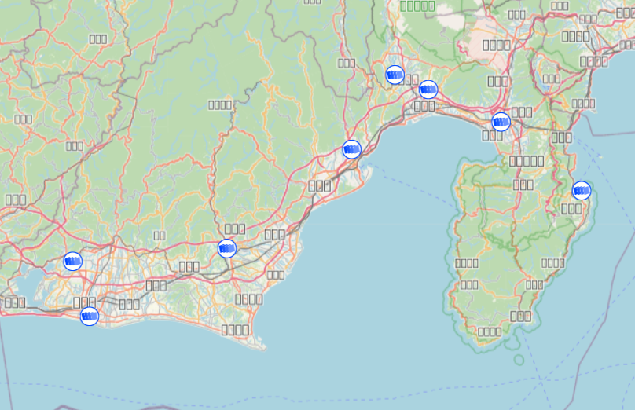
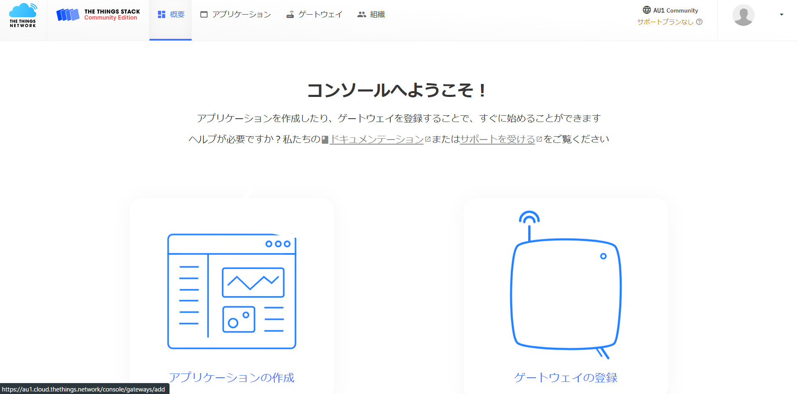

３万円ではじめるLoRaWAN
この記事のゴール
大まかな作業は次の１から３です。
１．自宅にLoRaWANゲートウェイを設置
ゲートウェイを家庭内のLANに接続し、The Things Network
(TTN)に登録します。これによって公共ゲートウェイを設置することになります。公共ゲートウェイは知らない第三者が使うこともできるゲートウェイです。屋外の良いロケーションにアンテナを設置した場合には数キロ圏内のデバイスがあなたのゲートウェイを使用できる可能性があります。室内設置ではせいぜい数百メートル圏内なので第三者が利用できる可能性は低いでしょう。
TTNへの登録の中でゲートウェイの位置情報を公開する設定にすると、右のようにTTN
Mapperの地図上にゲートウェイ位置情報が掲載されます。この中のひとつが今回私が設置した公共ゲートウェイです。
２．温度・湿度センサーをLoRaWANのエンドデバイスとして登録

もしも、そばに公共ゲートウェイが設置されていれば、特に断りもなく、それを利用してエンドデバイスをTTNに接続し、それを利用することができます。今回は自分でゲートウェイを設置しましたので、もちろんこのゲートウェイ経由でデバイスをインターネットに接続することになります。The
Things Stack のコンソールでデバイスの認証などの設定を行います。裏方ではJoin Serverがセキュアな通信を確立してくれます。
３．クラウド上のアプリケーションサーバを利用し、温度・湿度のグラフを表示させる
エンドデバイスが登録できたら、エンドデバイスが送信してくるデータ（ペイロード）を整えて、アプリケーションサーバにデータを渡すように設定します。アプリケーションサーバは、受け取ったデータをグラフにプロットさせるなどの機能を提供してくれます。今回はThings
Speakというアプリケーションサーバのサービスを利用し、グラフを表示させています。
【実際の過去２４時間の測定データを表示しています】
ここまでが今回のゴールです。LoRaWANに触れて、利用してみることでLoRaWANプラットフォームがどのようなものが理解できると思います。